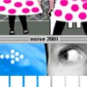
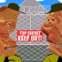

Flash Animations// Where the geeks meets the graphic designers and the artists meet the audiophiles, the noise Flash Animations are not only one of the freshest forms of expression on display at this years' festival - they could well be the future's ultimate creative outlet. Read the below feature to see the artists and their works, as well as finding out more info about Flashing your wares. |
|
|
|
 |
feature //
|

| | noise: YOUR POUND OF FLASH
by // Matt Blackman
What do you do upon visiting a new site when given the option to watch a fancy opening Flash sequence or click 'skip intro'? One guesses that most of us would do the latter, especially ...read more |
more features |
|
|
|
creative stuff //
|

| | "The meatheads" presents "Mass Destruction"
by // marc eiden
Part of a online cartoon series called "the meatheads".
...check it out |
more stuff |
|
creative people //
|
| | John Englezos
After completing Year 12 VCE in 2000 but not attaining the marks ...read more |
|
| | Desiree Cross
I animate. I made a cartoon. It was based on my family. ...read more |

| | Gideon Cheok
Back in 2000 I was offered many places in design courses at ...read more |
more people |
|
| | highlights and links //
Quick Guide
For background on the October 2001 festival go to About. To check out the 25+ plus online projects, take a look out our Projects page. To find out what else was went on in noise, take a look at our Festival Guide. |
Wanna make some noise?
It's not to late to enter the noise festival. Check out the True Tales of Love and Hate zine project. Open now to all young Australian creatives. Click here for all the info. |
Even more noise
Into comics? Take a look at the great stuff in the noise Comics section. Radio more your thing? Our ABC Radio page will let you know when to tune. Music? Check out our Remix finalists. |
|
|
|
|